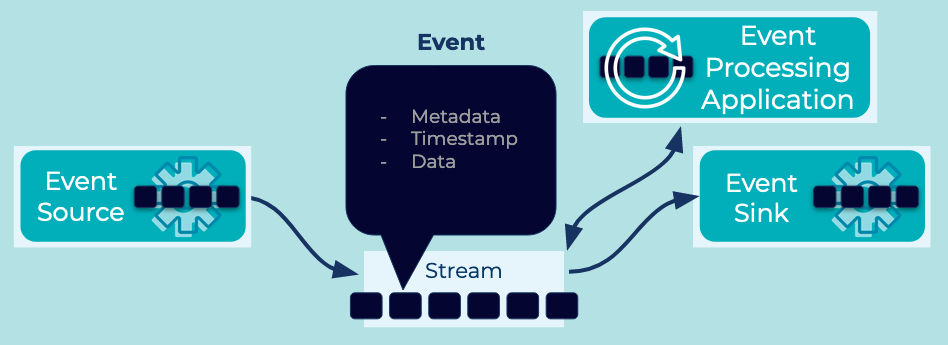

Event
Events represent facts and can help facilitate decoupled applications, services, and systems exchanging data across an Event Streaming Platform.
Problem
How do I represent a fact about something that has happened?
Solution
 An event represents an immutable fact about something that happened. Examples of Events might be: orders, payments, activities, or measurements. Events are produced to, stored in, and consumed from an Event Stream. An Event typically contains at least one or more data fields that describe the fact, as well as a timestamp that denotes when this Event was created by its Event Source. The Event may also contain various metadata about itself, such as its source of origin (e.g., the application or cloud services that created the event) and storage-level information (e.g., its position in the event stream).
Implementation
With Apache Kafka®, Events are referred to as records. Records are modeled as a key / value pair with a timestamp and optional metadata (called headers). The value of the record usually contains the representation of an application domain object or some form of raw message value, like the output of a sensor or other metric reading. The record key is useful for a few reasons, but critically they are used by Kafka to determine how the data is partitioned within a stream a.k.a. topic (see Partitioned Parallelism for more details on partitioning). Keys are often best thought of as a categorization of the Event, like the identity of a particular user or connected device. Headers are a place for record metadata which can help describe the Event data itself, and are themselves modeled as a map of keys and values.
Record keys, values, and headers are opaque data types, meaning that Kafka, by deliberate design to achieve its high scalability and performance, does not define a type interface for them: they are read, stored, and written by Kafka's server-side brokers as raw arrays of bytes. Instead, it is the responsibility of Kafka's client applications like the streaming database ksqlDB or microservices implemented with the client libraries such as Kafka Streams or the Kafka Go client to perform the serialization and deserialization of the data within the record keys, values, and headers.
When using the Java client library, events are created using the ProducerRecord type and sent to Kafka using the KafkaProducer. In this example, we have set the key and value types as strings and added a header:
ProducerRecord<String, String> newEvent = new ProducerRecord<>(
paymentEvent.getCustomerId().toString() /* key */,
paymentEvent.toString() /* value */);
producerRecord.headers()
.add("origin-cloud", "aws".getBytes(StandardCharsets.UTF_8));
producer.send(producerRecord);
Considerations
-
To ensure that Events from an Event Source can be read correctly by an Event Processor, they are often created in reference to an Event schema. Event Schemas are commonly defined in Avro, Protobuf, or JSON schema.
-
For cloud-based architectures, evaluate the use of CloudEvents. CloudEvents provide a standardized Event Envelope that wraps an event, making common event properties such as source, type, time, and ID universally accessible, regardless of how the event itself was serialized.
-
In certain scenarios, Events may represent commands (think: instructions, actions) that an Event Processor reading the events should carry out. See the Command Event for details.
References
- This pattern is derived in part from Message, Event Message, and Document Message in Enterprise Integration Patterns by Gregor Hohpe and Bobby Woolf
- Apache Kafka 101: Introduction provides a primer on "What is Kafka, and how does it work?" including information on core concepts like Events